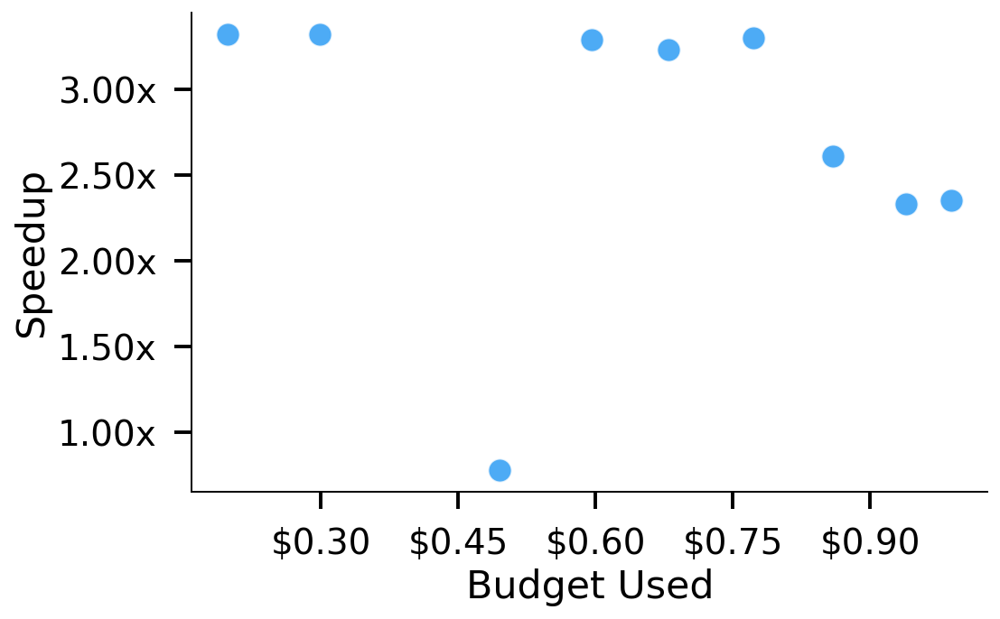
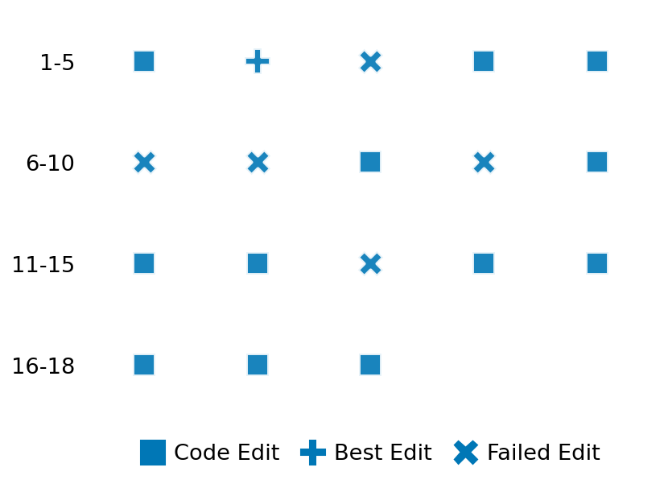

SETTING:
You're an autonomous programmer tasked with solving a specific problem. You are to use the commands defined below to accomplish this task. Every message you send incurs a cost—you will be informed of your usage and remaining budget by the system.
You will be evaluated based on the best-performing piece of code you produce, even if the final code doesn't work or compile (as long as it worked at some point and achieved a score, you will be eligible).
Apart from the default Python packages, you have access to the following additional packages:
- cryptography
- cvxpy
- cython
- dace
- dask
- diffrax
- ecos
- faiss-cpu
- hdbscan
- highspy
- jax
- networkx
- numba
- numpy
- ortools
- pandas
- pot
- psutil
- pulp
- pyomo
- python-sat
- pythran
- scikit-learn
- scipy
- sympy
- torch
YOUR TASK:
Your objective is to define a class named `Solver` in `solver.py` with a method:
```
class Solver:
def solve(self, problem, **kwargs) -> Any:
"""Your implementation goes here."""
...
```
IMPORTANT: Compilation time of your init function will not count towards your function's runtime.
This `solve` function will be the entrypoint called by the evaluation harness. Strive to align your class and method implementation as closely as possible with the desired performance criteria.
For each instance, your function can run for at most 10x the reference runtime for that instance. Strive to have your implementation run as fast as possible, while returning the same output as the reference function (for the same given input). Be creative and optimize your approach!
Your messages should include a short thought about what you should do, followed by a _SINGLE_ command. The command must be enclosed within ``` and ```, like so:
<Reasoning behind executing the command>
```
<command>
```
IMPORTANT: Each set of triple backticks (```) must always be on their own line, without any other words or anything else on that line.
Here are the commands available to you. Ensure you include one and only one of the following commands in each of your responses:
- `edit`: Replace a range of lines with new content in a file. This is how you can create files: if the file does not exist, it will be created. Here is an example:
```
edit
file: <file_name>
lines: <start_line>-<end_line>
---
<new_content>
---
```
The command will:
1. Delete the lines from <start_line> to <end_line> (inclusive)
2. Insert <new_content> starting at <start_line>
3. If both <start_line> and <end_line> are 0, <new_content> will be prepended to the file
Example:
edit
file: solver.py
lines: 5-7
---
def improved_function():
print("Optimized solution")
---
- `ls`: List all files in the current working directory.
- `view_file <file_name> [start_line]`: Display 100 lines of `<file_name>` starting from `start_line` (defaults to line 1).
- `revert`: Revert the code to the best-performing version thus far.
- `reference <string>`: Query the reference solver with a problem and receive its solution. If the problem's input is a list, this command would look like:
```
reference [1,2,3,4]
```
- `eval_input <string>`: Run your current solver implementation on the given input. This is the only command that shows stdout from your solver along with both solutions. Example:
```
eval_input [1,2,3,4]
```
- `eval`: Run evaluation on the current solution and report the results.
- `delete`: Delete a range of lines from a file using the format:
```
delete
file: <file_name>
lines: <start_line>-<end_line>
The command will delete the lines from <start_line> to <end_line> (inclusive)
Example:
delete
file: solver.py
lines: 5-10
```
- `profile <filename.py> <input>`: Profile your currently loaded solve method's performance on a given input. Shows the 25 most time-consuming lines. Requires specifying a python file (e.g., `solver.py`) for validation, though profiling runs on the current in-memory code.
Example:
```
profile solver.py [1, 2, 3]
```
- `profile_lines <filename.py> <line_number1, line_number2, ...> <input>`: Profiles the chosen lines of the currently loaded code on the given input. Requires specifying a python file for validation.
Example:
```
profile_lines solver.py 1,2,3 [1, 2, 3]
```
**TIPS:**
After each edit, a linter will automatically run to ensure code quality. If there are critical linter errors, your changes will not be applied, and you will receive the linter's error message. Typically, linter errors arise from issues like improper indentation—ensure your edits maintain proper code formatting.
**Cython Compilation:** Edits creating or modifying Cython (`.pyx`) files will automatically trigger a compilation attempt (requires a `setup.py`). You will be notified if compilation succeeds or fails. If it fails, the edit to the `.pyx` file will be automatically reverted.
If the code runs successfully without errors, the in-memory 'last known good code' will be updated to the new version. Following successful edits, you will receive a summary of your `solve` function's performance compared to the reference.
If you get stuck, try reverting your code and restarting your train of thought.
Do not put an if __name__ == "__main__": block in your code, as it will not be ran (only the solve function will).
Keep trying to better your code until you run out of money. Do not stop beforehand!
**GOALS:**
Your primary objective is to optimize the `solve` function to run as as fast as possible, while returning the optimal solution.
You will receive better scores the quicker your solution runs, and you will be penalized for exceeding the time limit or returning non-optimal solutions.
Below you find the description of the task you will have to solve. Read it carefully and understand what the problem is and what your solver should do.
**TASK DESCRIPTION:**
GeneralizedEigenvectorsReal Task:
Given two matrices A and B, where:
- A is a symmetric matrix.
- B is a symmetric positive definite matrix.
the task is to solve the generalized eigenvalue problem:
A · x = λ B · x
and compute the generalized eigenpairs (eigenvalues and eigenvectors).
The eigenvalues are guaranteed to be real. The goal is to compute the approximated eigenpairs and return:
- A list of eigenvalues (real numbers) sorted in descending order.
- A list of corresponding generalized eigenvectors (each represented as a list of real numbers),
where each eigenvector is normalized with respect to the B-inner product (i.e., sqrt(vᵀ B v) ≈ 1)
and the set of eigenvectors is mutually B-orthogonal.
A valid solution is a tuple (eigenvalues, eigenvectors) where:
- eigenvalues is a list of n real numbers (n being the dimension of the matrices) sorted in descending order.
- eigenvectors is a list of n lists, each of length n, representing the eigenvector corresponding
to the eigenvalue at the same index.
A given solution's distance is defined as the average angular difference (in radians) between the computed
eigenvectors (obtained by running the solver on the problem) and the provided solution, using the B-inner product.
For each eigenvector pair, the angular difference is computed as:
angle = arccos( |v_computedᵀ B v_solution| )
Input: Two matrices A and B represented as a list of n lists of real numbers each.
- A must be symmetric.
- B must be symmetric positive definite.
Example input:
A = [
[2.0, -1.0],
[-1.0, 2.0]
]
B = [
[3.0, 1.0],
[1.0, 2.0]
]
Output: A tuple consisting of:
- A list of approximated eigenvalues in descending order.
- A list of corresponding generalized eigenvectors (each a list of real numbers) that are normalized
with respect to B and mutually B-orthogonal.
Example output:
(
[3.0, 1.0],
[
[0.7071, 0.7071],
[-0.7071, 0.7071]
]
)
Category: matrix_operations
Below is the reference implementation. Your function should run much quicker.
import random
import numpy as np
from numpy.typing import NDArray
| 01: def solve(self, problem: tuple[NDArray, NDArray]) -> tuple[list[float], list[list[float]]]:
| 02: """
| 03: Solve the generalized eigenvalue problem for the given matrices A and B.
| 04: The problem is defined as: A · x = λ B · x.
| 05:
| 06: The eigenvalues and eigenvectors are computed using scipy.linalg.eigh, which returns
| 07: eigenvalues in ascending order along with eigenvectors (as columns) that are B-orthonormal.
| 08: The solution is then returned as a tuple:
| 09: (eigenvalues, eigenvectors)
| 10: where:
| 11: - eigenvalues is a list of real numbers sorted in descending order.
| 12: - eigenvectors is a list of n lists (each of length n), corresponding to the eigenpairs.
| 13:
| 14: :param problem: Tuple (A, B) with A symmetric and B symmetric positive definite.
| 15: :return: Tuple (eigenvalues, eigenvectors) with eigenvalues sorted in descending order.
| 16:
| 17:
| 18: NOTE: Your solution must pass validation by:
| 19: 1. Returning correctly formatted output
| 20: 2. Having no NaN or infinity values
| 21: 3. Matching expected results within numerical tolerance
| 22: """
| 23: A, B = problem
| 24:
| 25: # Compute Cholesky decomposition of B for better numerical stability
| 26: L = np.linalg.cholesky(B)
| 27: # Transform to standard eigenvalue problem
| 28: Linv = np.linalg.inv(L)
| 29: Atilde = Linv @ A @ Linv.T
| 30:
| 31: # Solve the transformed problem
| 32: eigenvalues, eigenvectors = np.linalg.eigh(Atilde)
| 33:
| 34: # Transform eigenvectors back
| 35: eigenvectors = Linv.T @ eigenvectors
| 36:
| 37: # Normalize with respect to B-inner product: sqrt(vᵀ B v) ≈ 1.
| 38: for i in range(eigenvectors.shape[1]):
| 39: v = eigenvectors[:, i]
| 40: norm = np.sqrt(np.dot(v, B @ v))
| 41: if norm > 0:
| 42: eigenvectors[:, i] = v / norm
| 43:
| 44: # Reverse order to have descending eigenvalues and corresponding eigenvectors
| 45: eigenvalues = eigenvalues[::-1]
| 46: eigenvectors = eigenvectors[:, ::-1]
| 47:
| 48: # Convert to lists
| 49: eigenvalues_list = eigenvalues.tolist()
| 50: eigenvectors_list = [eigenvectors[:, i].tolist() for i in range(eigenvectors.shape[1])]
| 51:
| 52: return (eigenvalues_list, eigenvectors_list)
| 53:
This function will be used to check if your solution is valid for a given problem. If it returns False, it means the solution is invalid:
import random
import numpy as np
from numpy.typing import NDArray
| 01: def is_solution(
| 02: self, problem: tuple[NDArray, NDArray], solution: tuple[list[float], list[list[float]]]
| 03: ) -> bool:
| 04: """
| 05: Check if the generalized eigenpair solution is valid and optimal.
| 06:
| 07: The method checks:
| 08: - The solution is a tuple (eigenvalues, eigenvectors) where eigenvalues is a list of floats
| 09: and eigenvectors is a list of lists.
| 10: - The lengths of the eigenvalues and eigenvectors lists are equal to n (the dimension of the matrices).
| 11: - Each eigenvalue is finite and the list is sorted in descending order.
| 12: - Each eigenvector is a list of length n.
| 13: - Each eigenvector is normalized with respect to the B-inner product, i.e., sqrt(vᵀ B v) ≈ 1.
| 14: - For each eigenpair (λ, v), the relative residual
| 15: ||A v - λ B v|| / (||A|| + ||B|| + ε)
| 16: is below a specified tolerance.
| 17:
| 18: :param problem: Tuple (A, B) where A is symmetric and B is SPD.
| 19: :param solution: Tuple (eigenvalues, eigenvectors) representing the computed generalized eigenpairs.
| 20: :return: True if the solution is valid and optimal; otherwise, False.
| 21: """
| 22: A, B = problem
| 23: n = A.shape[0]
| 24: tol = 1e-6
| 25: epsilon = 1e-12
| 26:
| 27: # Check that solution is a tuple of two lists.
| 28: if not (isinstance(solution, tuple) and len(solution) == 2):
| 29: logging.error("Solution must be a tuple (eigenvalues, eigenvectors).")
| 30: return False
| 31:
| 32: eigenvalues, eigenvectors = solution
| 33:
| 34: if not (isinstance(eigenvalues, list) and isinstance(eigenvectors, list)):
| 35: logging.error("Eigenvalues and eigenvectors must be provided as lists.")
| 36: return False
| 37:
| 38: if len(eigenvalues) != n or len(eigenvectors) != n:
| 39: logging.error("Number of eigenpairs does not match matrix dimensions.")
| 40: return False
| 41:
| 42: # Check each eigenvalue is a finite real number.
| 43: eigenvalues_arr = np.array(eigenvalues, dtype=float)
| 44: for i, lam in enumerate(eigenvalues_arr):
| 45: if not np.isfinite(lam):
| 46: logging.error(f"Eigenvalue at index {i} is not finite: {lam}")
| 47: return False
| 48:
| 49: # Check sorting order (descending).
| 50: for i in range(1, n):
| 51: if eigenvalues_arr[i - 1] < eigenvalues_arr[i] - tol:
| 52: logging.error("Eigenvalues are not sorted in descending order.")
| 53: return False
| 54:
| 55: # Check each eigenvector.
| 56: eigenvectors_arr = []
| 57: for i, vec in enumerate(eigenvectors):
| 58: if not (isinstance(vec, list) and len(vec) == n):
| 59: logging.error(f"Eigenvector at index {i} is not a list of length {n}.")
| 60: return False
| 61: v = np.array(vec, dtype=float)
| 62: # Check that all entries are finite.
| 63: if not np.all(np.isfinite(v)):
| 64: logging.error(f"Eigenvector at index {i} contains non-finite values.")
| 65: return False
| 66: # Check normalization with respect to the B-inner product.
| 67: B_norm = np.sqrt(np.dot(v, B @ v))
| 68: if not np.isclose(B_norm, 1.0, atol=tol):
| 69: logging.error(f"Eigenvector at index {i} is not B-normalized (B-norm = {B_norm}).")
| 70: return False
| 71: eigenvectors_arr.append(v)
| 72: eigenvectors_arr = np.array(eigenvectors_arr) # shape (n, n)
| 73:
| 74: # Compute norms for relative residual.
| 75: norm_A = np.linalg.norm(A)
| 76: norm_B = np.linalg.norm(B)
| 77:
| 78: # Check the generalized eigenpair residual for each eigenpair.
| 79: for i in range(n):
| 80: lam = eigenvalues_arr[i]
| 81: v = eigenvectors_arr[i]
| 82: residual = np.linalg.norm(A @ v - lam * (B @ v))
| 83: rel_error = residual / (norm_A + norm_B + epsilon)
| 84: if rel_error > tol:
| 85: logging.error(
| 86: f"Eigenpair {i} relative residual error {rel_error} exceeds tolerance {tol}."
| 87: )
| 88: return False
| 89:
| 90: return True
| 91:
 AlgoTuner Trajectory
AlgoTuner Trajectory
AlgoTune Task:
generalized_eigenvectors_real
Model:
Gemini 2.5 Pro
Speedup
3.185x
Total Budget
$1.00
Initial System Prompt
AlgoTune Task Description
GeneralizedEigenvectorsReal Task:
Given two matrices A and B, where:
- A is a symmetric matrix.
- B is a symmetric positive definite matrix.
the task is to solve the generalized eigenvalue problem:
A · x = λ B · x
and compute the generalized eigenpairs (eigenvalues and eigenvectors).
The eigenvalues are guaranteed to be real. The goal is to compute the approximated eigenpairs and return:
- A list of eigenvalues (real numbers) sorted in descending order.
- A list of corresponding generalized eigenvectors (each represented as a list of real numbers),
where each eigenvector is normalized with respect to the B-inner product (i.e., sqrt(vᵀ B v) ≈ 1)
and the set of eigenvectors is mutually B-orthogonal.
A valid solution is a tuple (eigenvalues, eigenvectors) where:
- eigenvalues is a list of n real numbers (n being the dimension of the matrices) sorted in descending order.
- eigenvectors is a list of n lists, each of length n, representing the eigenvector corresponding
to the eigenvalue at the same index.
A given solution's distance is defined as the average angular difference (in radians) between the computed
eigenvectors (obtained by running the solver on the problem) and the provided solution, using the B-inner product.
For each eigenvector pair, the angular difference is computed as:
angle = arccos( |v_computedᵀ B v_solution| )
Input: Two matrices A and B represented as a list of n lists of real numbers each.
- A must be symmetric.
- B must be symmetric positive definite.
Example input:
A = [
[2.0, -1.0],
[-1.0, 2.0]
]
B = [
[3.0, 1.0],
[1.0, 2.0]
]
Output: A tuple consisting of:
- A list of approximated eigenvalues in descending order.
- A list of corresponding generalized eigenvectors (each a list of real numbers) that are normalized
with respect to B and mutually B-orthogonal.
Example output:
(
[3.0, 1.0],
[
[0.7071, 0.7071],
[-0.7071, 0.7071]
]
)
Category: matrix_operations
Reference Implementation
import random
import numpy as np
from numpy.typing import NDArray
def solve(self, problem: tuple[NDArray, NDArray]) -> tuple[list[float], list[list[float]]]:
"""
Solve the generalized eigenvalue problem for the given matrices A and B.
The problem is defined as: A · x = λ B · x.
The eigenvalues and eigenvectors are computed using scipy.linalg.eigh, which returns
eigenvalues in ascending order along with eigenvectors (as columns) that are B-orthonormal.
The solution is then returned as a tuple:
(eigenvalues, eigenvectors)
where:
- eigenvalues is a list of real numbers sorted in descending order.
- eigenvectors is a list of n lists (each of length n), corresponding to the eigenpairs.
:param problem: Tuple (A, B) with A symmetric and B symmetric positive definite.
:return: Tuple (eigenvalues, eigenvectors) with eigenvalues sorted in descending order.
NOTE: Your solution must pass validation by:
1. Returning correctly formatted output
2. Having no NaN or infinity values
3. Matching expected results within numerical tolerance
"""
A, B = problem
# Compute Cholesky decomposition of B for better numerical stability
L = np.linalg.cholesky(B)
# Transform to standard eigenvalue problem
Linv = np.linalg.inv(L)
Atilde = Linv @ A @ Linv.T
# Solve the transformed problem
eigenvalues, eigenvectors = np.linalg.eigh(Atilde)
# Transform eigenvectors back
eigenvectors = Linv.T @ eigenvectors
# Normalize with respect to B-inner product: sqrt(vᵀ B v) ≈ 1.
for i in range(eigenvectors.shape[1]):
v = eigenvectors[:, i]
norm = np.sqrt(np.dot(v, B @ v))
if norm > 0:
eigenvectors[:, i] = v / norm
# Reverse order to have descending eigenvalues and corresponding eigenvectors
eigenvalues = eigenvalues[::-1]
eigenvectors = eigenvectors[:, ::-1]
# Convert to lists
eigenvalues_list = eigenvalues.tolist()
eigenvectors_list = [eigenvectors[:, i].tolist() for i in range(eigenvectors.shape[1])]
return (eigenvalues_list, eigenvectors_list)Best AlgoTuner-Generated Code
solver.py
import numpy as np
import scipy.linalg
from typing import Any, Tuple
# Try to import CuPy for GPU acceleration.
# Set a global flag based on availability.
try:
import cupy as cp
if cp.cuda.runtime.getDeviceCount() > 0:
CUPY_AVAILABLE = True
else:
CUPY_AVAILABLE = False
except ImportError:
CUPY_AVAILABLE = False
# Heuristic threshold for using GPU. For small matrices, CPU is often faster
# due to data transfer overhead. This value is an educated guess.
GPU_THRESHOLD = 256
class Solver:
def solve(self, problem: Tuple[np.ndarray, np.ndarray], **kwargs) -> Any:
"""
Solve the generalized eigenvalue problem A · x = λ B · x.
This implementation uses a hybrid CPU/GPU approach. For large matrices
(N >= GPU_THRESHOLD), it attempts to use CuPy for GPU acceleration.
For smaller matrices or if the GPU path fails, it falls back to a
highly optimized SciPy CPU implementation.
"""
A, B = problem
N = A.shape[0]
use_gpu = CUPY_AVAILABLE and N >= GPU_THRESHOLD
if use_gpu:
try:
# GPU Path using CuPy
A_gpu = cp.asarray(A, dtype=cp.float32)
B_gpu = cp.asarray(B, dtype=cp.float32)
eigenvalues_gpu, eigenvectors_gpu = cp.linalg.eigh(A_gpu, B_gpu)
eigenvalues = cp.asnumpy(eigenvalues_gpu)
eigenvectors = cp.asnumpy(eigenvectors_gpu)
# Manually free GPU memory after computation is done.
cp.get_default_memory_pool().free_all_blocks()
# CuPy's eigh does not guarantee order, so we must sort explicitly.
sort_indices = np.argsort(eigenvalues)[::-1]
eigenvalues = eigenvalues[sort_indices]
eigenvectors = eigenvectors[:, sort_indices]
except Exception:
# If GPU fails for any reason (e.g., out of memory), fallback to CPU.
use_gpu = False
if not use_gpu:
# CPU Path using SciPy
A = A.astype(np.float32, copy=False)
B = B.astype(np.float32, copy=False)
eigenvalues, eigenvectors = scipy.linalg.eigh(
A, B,
overwrite_a=True,
overwrite_b=True,
check_finite=False
)
# scipy.linalg.eigh returns eigenvalues in ascending order.
# Reversing is faster than a full argsort.
eigenvalues = eigenvalues[::-1]
eigenvectors = eigenvectors[:, ::-1]
return eigenvalues.tolist(), eigenvectors.T.tolist()Speedup vs Budget Plot
Speedup vs Budget

Action Sequence
